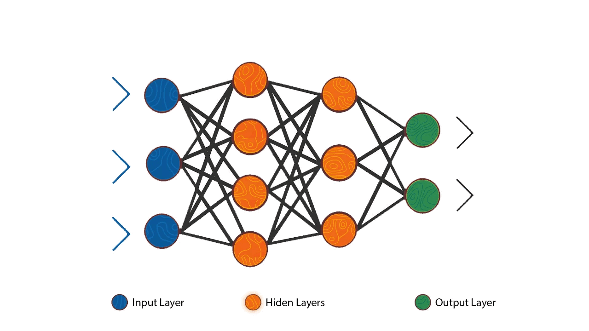
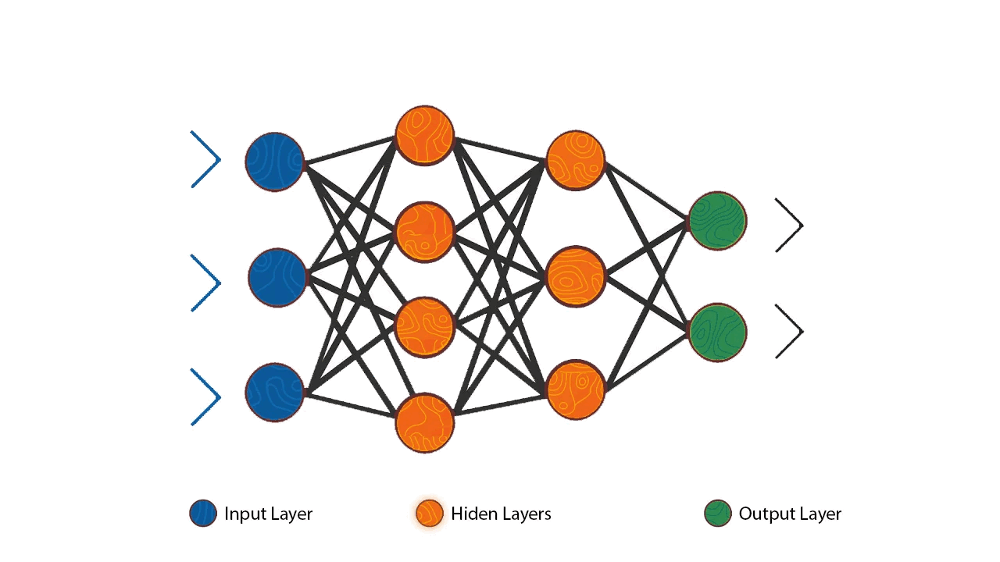

Research Assistant
German Research Center for AI
 

Dedicated linguist and tech enthusiast. Interested in preserving endangered languages and developing educational technology through utilising the latest NLP advances.
German Research Center for AI
Transnistrian Defence Forces